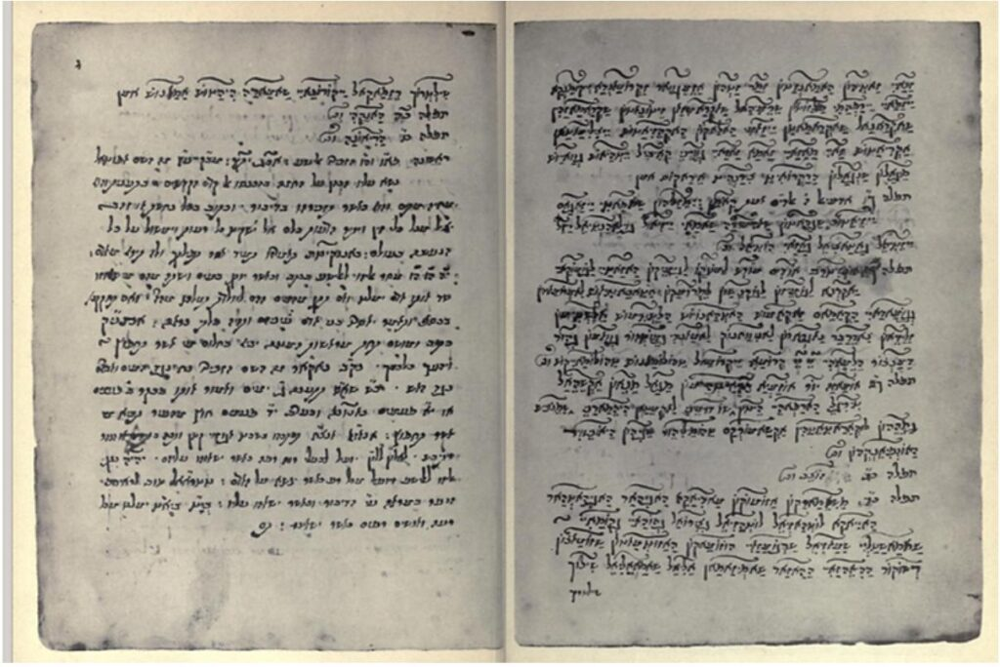

The following is the 31st part from a series of articles describing the adventure that a follower who goes by the handle "daegonmagus" has experienced since reading MM. They are very interesting and fascinating. I hope that you all learn from his journey and maybe learn a thing or two as he relates his unique experiences to the readership here. Lately he has been conducting lucid dreaming (LD) to map out the subconscious / non-physical realms that surround us. His writings are very interesting, but describe things way beyond my understanding. Never the less, many MM readers find great value in his experiences, and writings, and one can easily see benefit in reading his writings. I hope that you enjoy this article. -MM
Adventures in the Occult: Thoughts on {Not} Being a Freemason
I came across this site, inscribed on believing on the mind (metallicman (inscribedonthebelievingmind.blog) in which I seem to feature in one of the articles along side Metallicman. Lucky me for being “famous”, I guess. Unfortunately the article makes some assumptions about me that are quite inaccurate, like the (very definitively written) idea I am a Freemason and another retired MAJestic agent. Guys, I don’t care if you want to write articles that feature me but at least fucking verify your information with me beforehand, else it makes your content look like its full of “badly researched” holes and shouldn’t be taken seriously. I wrote to the article’s publisher, Diana Barharona, requesting a polite change to its content, but never received a reply, so in response to it I’d figured I’d clarify a few points.
Firstly, I am not a MAJestic Agent, at least, not that I Know of – I came into contact with Metallicman after having experiences that paralleled with his during his time in MAJestic courtesy of my LDing – I offered to edit his books because I understand the true importance of his content. Secondly I am not, nor ever have been and never will be a Freemason, though I do have masonic blood in both sides of my family; my great uncle was a 33rd degree Mason from the Broome lodge of Western Australia, and on my mother’s side I only have a passing reference of who was actually involved in the organisation, as I never met them before their ultimate expiration from the earth. My connection to the organisation, is, therefore, now reduced to a silver ring that was kept and handed down after said expiration. In regards to my great uncle, I only met him a handful of times as a kid, and only found out about his masonic connection long after I’d started walking down my own metaphysical path.
I never liked the man particularly much; my first memory of him was him pulling his false teeth out and chasing me around the house with them. Which is probably a good thing, considering the unknown persona he carried with him over and through his deathbed; that he exhibited at one point paedophilic tendencies on certain members of the family – not really something anyone should be surprised by given the amount of similar stories arising about Freemasonic happenings.
Of course, his victims never spoke about any of it until they had 6 ft of dirt separating him from them. I only found out about it back in 2019, and was – to put it simply – QUITE FUCKING LIVID, as this is something that goes against the very essence of my being, and considering I still genuinely cared for the family member in question. My only solace is knowing that his dementia did a good job of obliterating his brains cells in the years before he finally kicked the bucket. That and the fact that his indiscretions could be considered at the more “minor” end of the spectrum when it comes to the question of psychological damage such individuals can cause upon their victims. I shudder to think there was more than what was brought forward. Maybe it is my own naievity, maybe it’s a defense mechanism to stop me digging too deep into it and setting me off on a path of grave defilement. Whatever, I guess it explains why I thought it necessary to clarify my position.
In addition to this, I was once approached to join the brotherhood by another old man at a spiritualist circle I used to attend with my mother and SD. As far as I am aware, him and my great uncle had no connection to one another. I politely declined the invitation because at that point I was not interested in submitting the celestial authority that came with the spark that animated my physical being over to a society built upon the idea of a spiritual hierarchy.
Quite frankly, I’d been astral projecting and lucid dreaming for a decade at that point, and had read all about Aleister Crowley and his Argentum Aurum, the Hermetic Order of The Golden Dawn, Ordo Templi Orientis etc. Call it arrogance – though I call it an unfaltering knowledge of self – the Freemasons seemed to me like just another group of novice Occultists that needed to be handed their divinity piece by piece by climbing through the ranks of the degrees. I preferred to bypass all that shit and reclaim my divinity myself, from the devil himself, if necessary; part of this involved never allowing any other individual or organisation to project false authority over my soul and its progression, as I truly believed that right belonged to my higher self, and my higher self alone.
Still, he sought the need to hand me some pamphlets on the Freemason’s apparent ideologies and how one cannot become a member unless they have an initiate vouch for them, which, I guess, is what he was planning on doing for me. You don’t get random’s making such an offer unless you have demonstrated you at least know a little bit about what it is you are talking about.
This does not mean I didn’t research what I could about them (much of which had already been done by the time I was propositioned to join). You may remember I was a steward of the Hell Fire Club which practiced spiritual alchemy. The only reason I had even bothered joining this Club was because it allowed for self initiation, as the club was not interested in using a similar hierarchal method of initiation to the Freemasons. Plus it had some really rare and hard to obtain books on magic, in a specially bound editions, which, like I have mentioned previously, is what really tickled my fancy.
This all sounds very mysterious, and diabolical, given the English chapter used to meet in the caves of West Wycombe in fancy masks and robes to carry out their rituals (based on Pagan festivities), but in reality my chapter never consisted of more than SD and myself, and all we ever did was sit on a carpet in our own house and throw a coin at a bottle; big fucking whoop. Nothing in comparison to the secret meetings and “architectural marvels” the Freemasons have been known to engage in and construct in the apparent quest to “become better men”. As I mentioned before, I revered knowledge above all personal gain and profit. The Hellfire Club was an interesting avenue into gaining more knowledge of the alchemical process of transmuting the lead of human consciousness into something much more profound and metaphorically “golden”.
But – and there is a but – being a club heavily inspired by Hermetic teachings, which crosses paths with some Freemasonic concepts and ideologies, it was inevitable that it was going to attract initiates of Freemasonry as well as other societies such as those aforementioned.
The Stewards for the other Australian (as well as international) Chapters, for example, are themselves occultists, which belong to such organisations as the Freemasons, the Hermetic Order of the Red Dragon etc etc. You have to also consider that this was in the early days of social media, before there were any real dedicated chat rooms where concepts such as the occult (which simply means “hidden” or “hidden knowledge”) could be freely talked about without ridicule from the spiritually inept who would brandish them as devil worshippers etc (wait until you see what the demonologists talk about, lol).
So you could say that as the international division of the Hellfire Club took off, us members began to realise we had a safe spot to bounce metaphysical concepts and ideas off each other, as each sought to incorporate their own occult knowledge and flavour into their own chapters. I became respected among these other members as I demonstrated knowledge I had picked up on the Kabbalah, Alchemy and the occult in general over many years of study, and likewise I respected them and the knowledge they offered me, a lot of which had to do with Freemasonic processes.
So yes, I had, and still do have access to a network of high ranking 33rd degree Freemasons, who have some influence over the operations of others in other jurisdictions. To give you an idea of this influence, when a potential recruit – also a low ranking Freemasonic initiate – into our HFC chapter tried to rape SD, I was told if I had brought the matter to one I am in contact with, himself a 33rd degree Freemason, immediately after it had happened, they could have ejected and banned this piece of shit from joining any of the Australian divisions – this is what I mean when I say my knowledge of the occult earnt me some “respect”. Am I involved in their evil diabolical scheme to take over the world?. Hence there are things that I know, some deduced from extension of my studies into the occult, and some communicated directly to me by these Freemasons, but at the end of the day I hold no oaths, or am held by no encumberances when it comes to the distribution of “what I know”. And Hence I have seen both the good and bad parts of the brotherhood, so I am loathe to jump on the bandwagon of vilifying them as a whole. The answer, unfortunately for those who’d have a mind to spin my content as being some form of Freemasonic propaganda, is a somewhat stale and rather definite “no”.
This does not mean I know all there is to know about the Freemasons and their goings on behind closed doors – honestly, to me, it’s a confusing mess of shit that varies from Rite to Rite and jurisdiction to jurisdiction, that I have no intention of delving too deeply into – but what I do know is that the Temple of Solomon, and the subsequent Greater and Lesser Keys of Solomon, which deal with the summoning of “Djinn” or “demons” is a very integral part of the core concepts that are dealt with within {one aspect of} Freemasonry, as can be evidenced from HERE.
Unfortunately for the Freemasonic brotherhood, I also know, from another, exterior source, who was directly brought up under an operation involving Extra Terrestrials – a very big one, dating back before WW2 – that the ideologies around such “demons” or “goetic spirits” were originally distorted by the protectors of the very Temple the Freemasons worship (this goes back beyond Hiram Abif), to lead prying eyes down a false road. What was revealed to me by this source, was that the Freemasonic brotherhood was intentionally set up as a front to hide the true identity of what these goetic spirits actually were/are; interdimensional intelligences that could be communicated with and prepared for possession of a willing host through the Solomonic workings, ie the Greater and Lesser Keys. According to my source, Solomon himself, wasn’t exactly “human”; the original builders of his temple knew of this secret, because it was to be a chamber that provided the necessary atmosphere for that intelligence to acclimatise after it found a willing host. True Masons were those who allegedly knew this secret, and my source claims she was brought up by one of them. Of course, I have no way of verifying any of this, so its up to the reader how much salt they want to sprinkle o n that tasty morsel.
But I can attest to the assertion there is something otherworldly about these books, because I inadvertently summoned one of these entities early one morning and it scared the absolute shit out of me.
And I do not mean via an LD state either. Here, in this physical world, I accidentally brought one of these entities from its realm into ours, after simply reading from the versions of the Greater and Lesser Keys that I owned.
I was around about the age of 20, and I had just received my Hell Fire Club Bound Edition (extremely rare and worth $600 – $1200 respectively) copies of these works in the mail; A copy of Aleister Crowley’s own Goetia – the Lesser Key – , replete with his handwritten notes, and a copy of Sepher Maphtea Shalamoh, one of the oldest known surviving manuscripts of the Greater Key –
Here is a picture of the pages from an identical, non Hellfire Club edition I owned of the Sepher Maphtea Shalamoh. Good luck trying to read it if you don’t know Aramaic Hebrew (I sure as fuck don’t, though if you do I’d be very interested in a helpful translation of the entire thing).

You hear of people in the occult community who try and use these grimoires to obtain money and power and whatever other materialistic shit they can think of; this wasn’t part of my intention. I had them simply because I wanted the knowledge they contained. I was committed to reading them without ever actually trying the rituals contained within.
That very night, or more correctly morning as it was about 3am, I was in my caravan (trailer in American speak) playing xbox with my dog, Abby, sat on the couch next to me whilst SD slept in the bed just over from us. All of a sudden I heard a very deep, guttural roaring sound, deeper and louder than any human could ever manage, followed by a stomping from one end of the caravan to other. I was around 100kg at the time and these footsteps shook the caravan much more than I did even when I was in a pissed off mood. They were very, very heavy, and very dense steps – not the footsteps or noise of any Tom cat or animal one would expect to find in that part of Western Australia. Abby was a fearless dog, and this scared the shit even out of her. Make no mistake, this was a good, old fashioned demon summoning if ever there was one. As soon as it finished, the TV went nuts and just started flicking 666 over and over again despite the remote not being jammed under anything, as it was sitting on the table next to me. For anyone who has studied the occult, and certain people of historical fame, that number is an obvious reference to Master Therion, aka Aleister Crowley. How coincidental I’d been reading his copy of the Goetia only hours prior. Regardless, it was good lesson in taking care next time I read the thing.
So yes, these texts are powerful texts, but I do not recommend fucking with them unless you have balls of steel, and know absolutely what the fuck it is you are doing. And not unless you are intending to be a willing host for an interdimensional consciousness to take up residence in your body; regardless of whether or not this is your intention THIS WHAT THE KEYS INTENDED PURPOSE WAS. They are {allegedly} the original CE5 protocols, and I have a suspicion there are some Freemasons who know this and have incorporated it into the Lodges workings, though I do not think every single Lodge knows about it. Again, maybe that is my own naivety. New age demon worshippers (and yes there a lot of them, facebook now has groups dedicated to the subject – I have watched these spawn into communities from nothing) have no idea what they are fucking around with. Thinking it is a means for quick materialistic manifestations, many of these worshippers will willingly engrave, tattoo, embed the sigils of these interdimensional consciousnesses directly onto their bodies, using blood for ink, using the rituals to “command” these intelligences into doing their bidding etc.
Talk about fucking amateurs.
You see why I always had a thirst for knowledge of just what the fuck it was I was getting myself into before diving right into it? If you want to know how possession works, it is carried out via sleep paralysis; I have experienced this directly, and so has SD – the exact same experience. What happens is the dominant consciousness enters via the ear, in my case, the right one, and you feel your own consciousness distort as it gets squeezed to one small side of your head. You can then feel the invading thought form taking up residence in the greater portion of your head that you no longer occupy. It is not a pleasant experience, which I liken to “mind raping”.
To one who is not lucky enough to even get to sleep paralysis (that is a joke), you will simply wake up and have thoughts that will destroy you if you are unable dissociate yourself from them. In my case, it bent my perception to seeing suicide as a very tempting option, seemingly for no reason, then I remembered the mind worm invader the night previous, shook the thoughts off (repetitively) and they never bothered me again; you must be very savvy as to what constitutes your thoughts, and what are those thoughts from an invading parasite. This was some years after the incident in the caravan so I don’t think the two were related, but still if you see anyone engaging in this level of dumb shittery, high ranking Freemasonic members included, you can bet your bottom dollar they don’t have the faintest idea of what it is they are doing, and are, in all probability going along with something that has been taught at the highest levels, under the idea that a Goetic intelligence is a nefarious spirit to be “commanded to do one’s bidding”. Either that, or they are taking inspiration from Crowley when he deliberately stepped into the circle of the demon Choronzon and let it possess him. Not exactly sure what divine ending they would be expecting from that though.
The only proper way to communicate with such entities is via the hypnogogic/lucid dreaming state, when connected to the higher information stream of the higher self – this importance needs to be emphasized, because when connected to this information stream things cannot lie to you; you can literally trace their whole existence through MWI and analyse every thought and choice they have ever made; if they are deceiving you, it will show in this analysis. If you can muster the discipline to do away with the ritualistic commands of the Greater and Lesser Keys, the type of shit that apparent Masters of the Occult, like Crowley, suggested were necessary, and actually meet them face to face in their own domain with a level of respect, you might find they are willing to reveal to you “forbidden knowledge” of the earth and the greater cosmos; who do you think the “President” of the Unseen 5 that showed me “the fall” was? Wink wink. Of course, if you haven’t prepared your consciousness accordingly, the energetic signature of these spirits will likely be too intense for you to bear (another reason why you need the higher information processing capabilities of the higher self). It is just simply too much information for your consciousness to be able to handle. But it is sure a hell of a lot less intense than standing face to face with the Grand Architect of the universe, what the big G in the middle of the Masonic square and compass represents. Just trust me on that one
“The spirits of the Goetia are portions of the human brain. Their seals therefore represent methods of stimulating or regulating those particular spots (though the eye).” – Aleister Crowley, The Initiated Interpretation of Ceremonial Magic in the Goetia.)
And I quote from the previous link:
“If we as masons want to look at this in a philosophical sense we are all seeking to be the wise King Solomon. We must unlock the brass vessel of our own unconscious mind releasing all the aspects of ourselves we care not to let out. Each demon can be seen as an aspect of our personality that we keep hidden from the world. It is the goal of the magician with the aid of angels and magickal weapons to face the dark aspects of him and symbolically slay and expel those forces from our own spiritual nature, thus purifying him. This medieval system of what some would consider “black magick” is simply a way to reflect upon the aspects of our own psyche. If we as individuals wish togain the wisdom of the archetypal king, we should face the shadow of ourselves and the demons that well in the void of our own nightmares.”
So the Freemasons, channeling their inner Carl Jung, believe that the texts allow an unlocking of deep aspects of the psyche which must be vanquished with the help of the “angels”….so what happens if the angels are really demons in disguise and are the very things responsible for those darker aspects of the self arising in the first place?
The Native Americans believed in such a concept they called the Wetiko, which they considered to be a sort of psychic virus that attached itself to the psyche of man and inflated his ego to the point he would put his own selfishness before empathy; Paul Levy does a good write up of this at https://www.theosophical.org/publications/quest-magazine/3472
Can you see where I am going with this? Through the illusion of duality of good and evil “spirits” – ie, angels vs demons – and the failure to understand that one’s own consciousness is originally of the highest attainable divine status, (ie, failure to adhere to a very basic and core concept of the occult) the Freemasons have allowed the submission of their own divine authority over to lesser divine parasitic entities, so that these same entities may “help” liberate them from a problem they {potentially} had a hand in causing in the first place.
To anyone who has read even a small amount of Carl Jung’s work in this area, it could be argued shadow work does not need to involve the help of supposed “angels” or “guides” to be carried out. In fact, repetitive self psychological evaluation was part of my “magickal undertakings”; I use to evaluate myself and my thoughts and try to understand where they had arisen, and what had caused them in my constant effort to “know myself” – again a basic edict of Alchemy. For us lucid dreamers, who can literally enter into the parts of our subconscious mind and “see” the thoughts as they arise, and what the shadow self is actually comprised of, and analyse these completely from an objective viewpoint, the last thing we need is “help”.
So where does this leave me? I already met the “Grand Architect”, who I called the All Being, back in 2016. What could any Freemasonic Lodge offer me if the whole goal of their brotherhood is to eventually bring one’s consciousness into contact with such a being? Seems I must have been quite learned in “High Magick” to achieve this feat without ever bothering to join their organisation.
The supposed “evil” nature of the Goetic spirits does not match to their temperament when met under LD – they can be considered very respectable intelligences in this domain – which suggests to me the Solomonic rituals are actually subverting the communication over to other entities who do not want us contacting these spirits because of the information they {the Goetic spirits} hold. If my source {and assumptions from my experiences and those in my inner circle} is correct and these are indeed inter dimensional intelligences, then the question must be asked: who is summoning what when using such ceremonial methods as the Freemasons and Crowley used?
Let’s continue from that link shall we?
“Before one sincerely attempts to evoke these demons, one should first spend some time invoking the 72 counterpart angels of the Almadel. The Almadel is a very enlightening experience and puts the magician in touch with the aspects of virtue within the psyche of the individual. This should be required for two reasons, one: one should be in touch with their inner strength before they face the demons, and two: the angels of the Almadel have direct control over the demons of the brass vessel. The Almadel is a system of scrying into a crystal ball over an altar made of wax upon which are engraved the Holy names of God. Remember that invocation is to call down a power within your spirit and mind, so you invoke angels to bring them closer. The Magician will evoke demons, to bring from within ones self into manifestation. After one has made meaningful contact with his own inner angelic forces, he is now mentally and spiritually prepared to venture into the darkness of his own being. This system of High Magick should only be attempted by those who have magickal training, or are learned practitioners of ceremonial magick. This system to the unprepared is VERY DANGEROUS, and can be disastrous for those who approach the subject manner with a light heart or contempt in the mind. A short exert from the Lesser Key of Solomon will show the level of seriousness this system deserves. Curse you and deprive you from all your offices and places of joy and place and do bind thee in the depths of the bottomless pit, there to remain until the day of judgment; I say into the lake of fire and brimstone… let all the company of heaven curse thee… let the hosts of heaven curse thee, I curse thee into fire unquenchable, and torments unspeakable as thy name and seal is contained in this box, chained and bound up and shall be choked in sulphurus and stinking substance and burnt in this material fire… which is prepared for thee damned and cursed spirits and there to remain until the day of doom and never more remembered of before the face of God which shall come to judge the dead and the world by fire.” (Lesser Key of Solomon, Book 1: Ars Goetia)
The Goetic demons require quite an elaborate array of magical implements such as a magic robe, wand, sword, circle, ring, brass vessel containing the 72 sigils of demons, black mirror within the magick triangle, and a very good memory. These evocations are quite lengthy and the magickal ritual can last quite awhile, especially when in a hypnotic trance which is required. “
What we have a case of is “the bible told us these {demons} were bad, and that these {angels} were good, so we will employ the service of the good guys and not question their motives”. That’s fine if you are of a religious inclination, but I never have been so the core concepts behind such a dualistic method of thinking in Freemasonry simply do not fit with my ideological makeup. The two are not compatible, therefore there is no reason for me to be a part of their Brotherhood.
My first novel, Dreaming Demons, as appalling as it was (first novels are always shit, especially when you are trying to offend as many people as possible with it), attempted to explain this difference in temperament between the Goetic spirits outside of the dualistic concepts of good and evil. It was a 120k word story which featured Astaroth as the main character (though “his” name was written backwards). As I was writing this book, I one day had an urge to switch on the TV, which was strange because I never watched TV in the day time. I specifically remember just randomly stopping typing and walking over to it and flicking it on. So what are the odds, that at that exact moment the movie Bedknobs and Broomsticks was on, and the children were discussing “finding the Star of Astaroth? One in several million billion I bet. Astaroth is the 29th spirit of the Goetia and is said to “show people the fall”. His rank, as mentioned by Crowley, was Duke, though other spirits held the rank of President. So when I was shown “the Fall” by the leader of the Unseen 5, I was also shown that his rank is no longer Duke but now rather President – this is why he was taking the form of then president Obama. Does that clarify who this organisation really is? It should be obvious by now that it is the real Ashtar{oth}/ Command – not that fake ass bullshit one finds discussed in new age circles.
In case you weren’t aware, Astaroth was synonymous with The Phoenician goddess Astarte, the Babylonian Ishtar, and the Sumerian Inanna:
The name Astaroth was ultimately derived from that of 2nd millennium BC Phoenician goddess Astarte,[1] an equivalent of the Babylonian Ishtar, and the earlier Sumerian Inanna. She is mentioned in the Hebrew Bible in the forms Ashtoreth (singular) and Ashtaroth (plural, in reference to multiple statues of it). This latter form was directly transliterated in the early Greek and Latin versions of the Bible, where it was less apparent that it had been a plural feminine in Hebrew. – https://en.wikipedia.org/wiki/Astaroth
This should give you an idea of just how old the Unseen 5 really is. They have been monitoring humanity from their vantage point in the astral planes since at least the time of Ancient Sumeria.
So, to summarise the question of whether or not I am a Freemason, the answer is no, and the reasons are:
Submission of one’s own celestial authority over to lesser intelligences is the first failing step to what many occult and Hermetic societies strived to achieve. The ranking system of the Freemasons (and many other secret societies for that matter) is a sure fire guaranteed way of diminishing this celestial authority even further, and submits to the idea man is a lesser intelligence that must evolve its way into divinity, rather than already possessing a ticket of entry.
Freemasons believe in the duality of angel vs demon arising from a core religious belief that centres around Christianity. The subjectivity and personal nature of religion provides a weakness for manipulative entities to exploit, in my opinion, hence why I believe all occult practices should be done with an objective mind free from emotion and religious doctrine.
Freemasonry can’t offer anything in the development and understanding of the psyche beyond what Lucid dreaming can offer. Ritual becomes redundant when you can enter into the very part of the mind the ritual seeks to exploit and directly push the buttons that exist therein.
Personal Experience tells me that the Goetic spirits are real interdimensional intelligences that very much differ from being simply deeply repressed aspects of the shadow self, and that they hold some every important information about humans and their {true} cosmological history. Those in my inner circle, through their own experiences, agree with this assessment. This does not fit in with the Freemasonic understanding of these spirits.
I’ve already met the Grand Architect, there is simply nothing the brotherhood can offer me in the form of spiritual liberation.